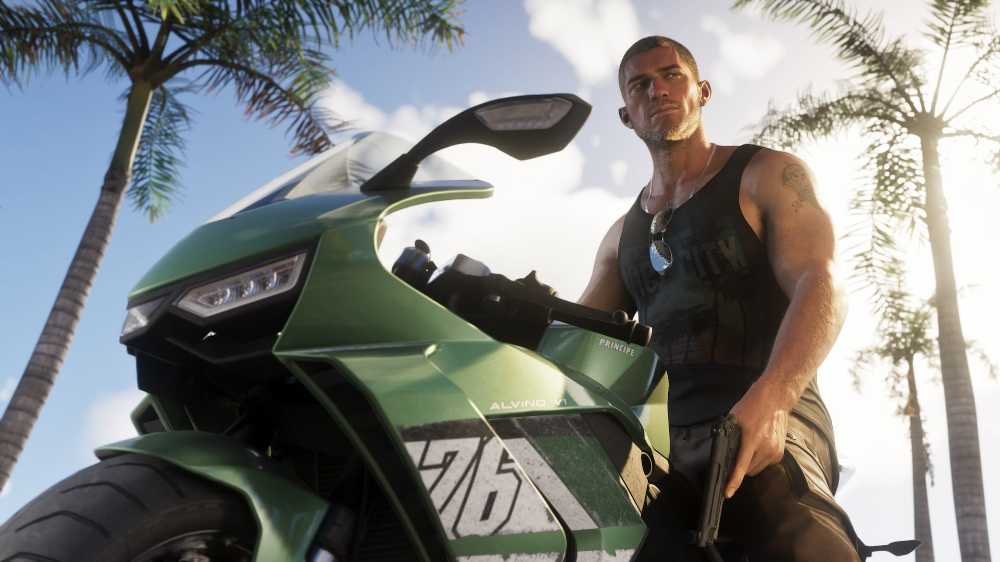
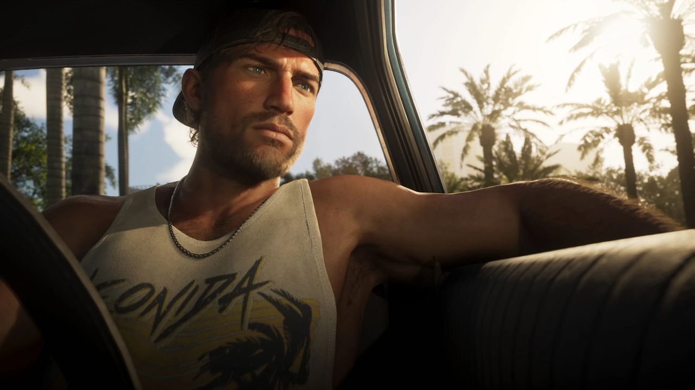
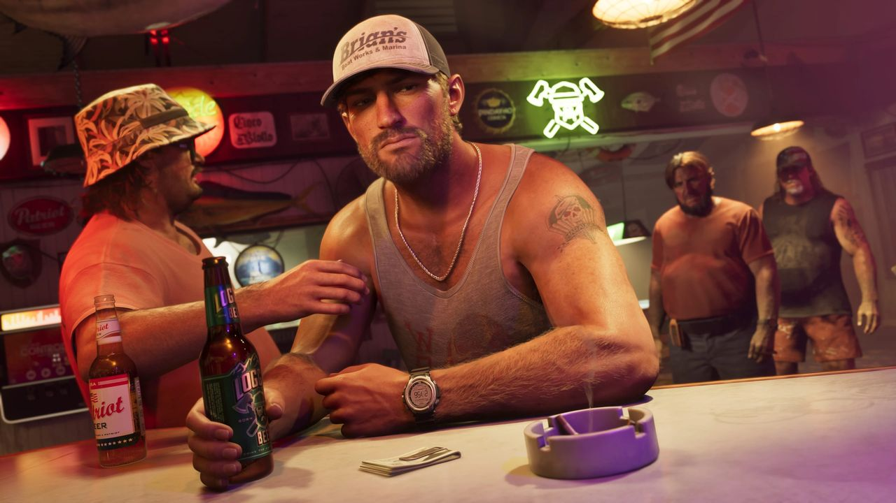
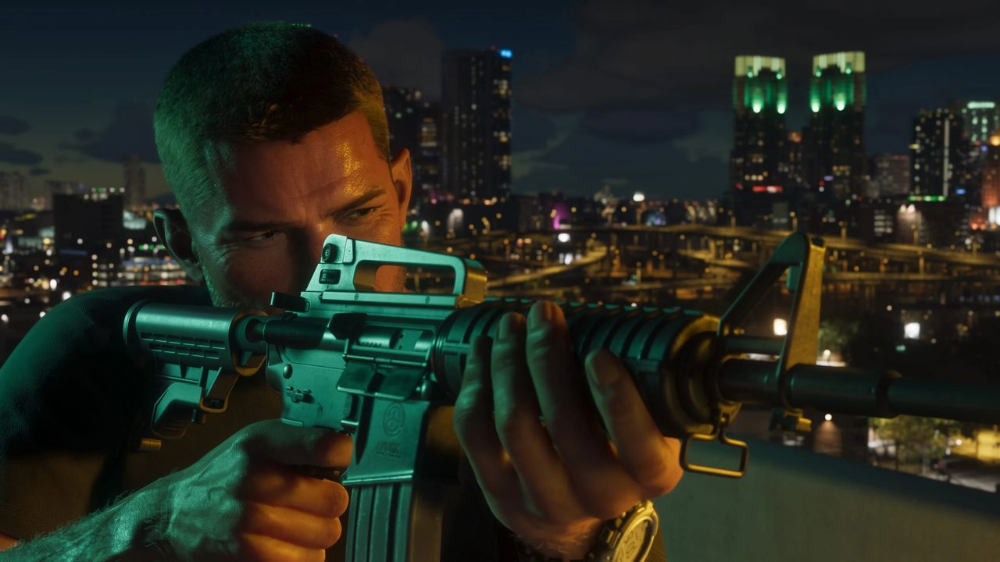
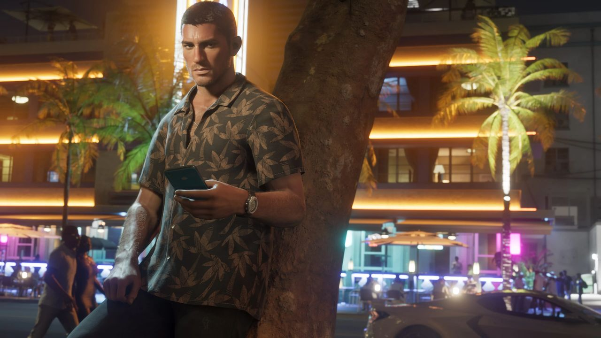
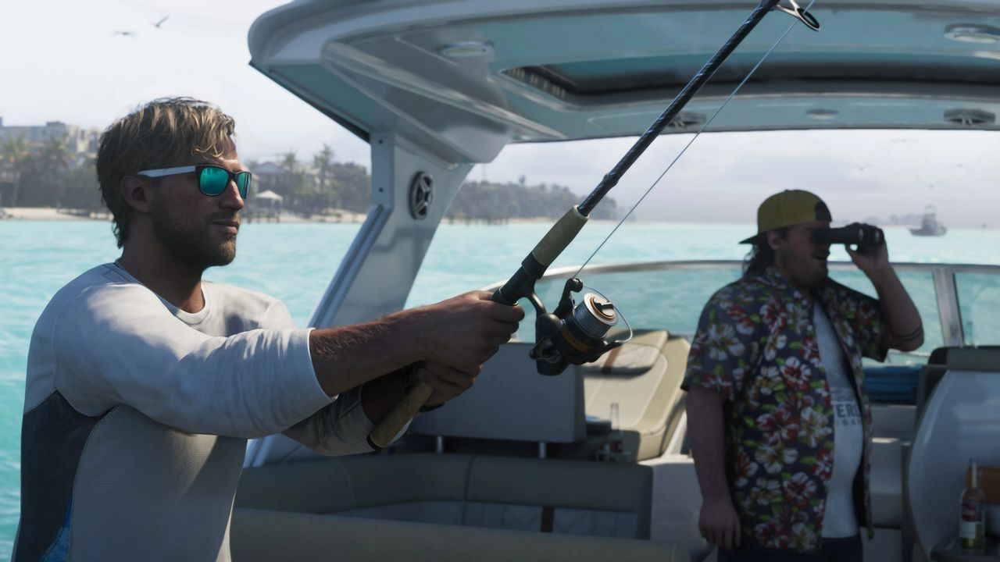
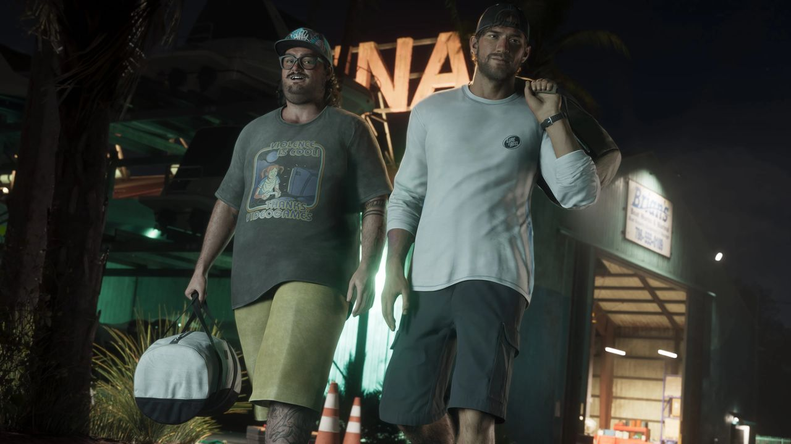

© Rockstar Games / Take-Two Interactive
Jason Duval
EN BREF
- Rôle : Protagoniste jouable
- Domicile : Maison sur pilotis à Key Lento (propriété de Brian Heder)
- Activité : Travaille pour des trafiquants de drogue des Keys
- Entourage : Lucia Caminos, Cal Hampton, Brian Heder, Dre'Quan Priest
- Véhicules vus : Tulip rouge, Creado turquoise
- Doublage : Comédien non encore annoncé officiellement
Jason Duval est l'un des deux protagonistes jouables de GTA 6, aux côtés de Lucia Caminos. Ensemble, ils forment un duo criminel qui se retrouve mêlé à une conspiration à l'échelle de tout l'État de Leonida.
Sa phrase fétiche, tirée du matériel officiel, résume sa loyauté envers Lucia : « If anything happens, I'm right behind you » (« s'il se passe quoi que ce soit, je suis juste derrière toi »).
Galerie








© Rockstar Games / Take-Two Interactive — images officielles de GTA VI (bandes-annonces, captures, site officiel), via GTA Wiki.
Son histoire selon Rockstar
D'après sa présentation officielle, Jason « veut une vie facile, mais les choses ne font que se compliquer ». Il a grandi entouré d'escrocs et de petits truands. Après un passage dans l'armée pour tourner la page d'une adolescence agitée, il s'est retrouvé dans les Leonida Keys à faire ce qu'il connaît le mieux : travailler pour des trafiquants de drogue locaux. Il serait peut-être temps d'essayer autre chose.
Brian Heder, vétéran du trafic dans les Keys, le loge gratuitement dans une de ses propriétés de Key Lento en échange de coups de main pour « secouer » les mauvais payeurs du coin.
Rencontrer Lucia pourrait être « la meilleure ou la pire chose qui lui soit jamais arrivée ». Jason sait comment il aimerait que ça tourne, mais pour l'instant, difficile de le dire.
Le duo avec Lucia
Rockstar décrit Lucia comme le « moteur » du duo et Jason comme le « frein » : les deux se complètent et se poussent mutuellement tout au long de l'histoire.
Le joueur peut basculer entre Jason et Lucia en exploration libre, même si certaines situations imposent l'un des deux. Selon le GTA Wiki, la nature de leur relation (amicale ou amoureuse) dépendrait d'un système de relation influencé par le joueur.
Apparitions
- Bande-annonce 1 : braquages en duo avec Lucia, scènes de cavale à travers Leonida.
- Bande-annonce 2 : vie dans les Keys, passage devant la fresque de La Perle, visite à la Leonida Penitentiary pour récupérer Lucia.
- Extended Look : récupération d'une livraison chez Raymond pour Boobie Ike, fuite pendant une descente de police, sauvetage de Raul Bautista.
Inspiration
Le couple Jason–Lucia est souvent comparé à Bonnie et Clyde, le célèbre duo de braqueurs américains des années 1930. Clin d'œil relevé par le GTA Wiki : la date de sortie du jeu, le 19 novembre 2026, correspond à la date souvent citée pour le premier braquage de banque de Bonnie Parker et Clyde Barrow, en 1932.